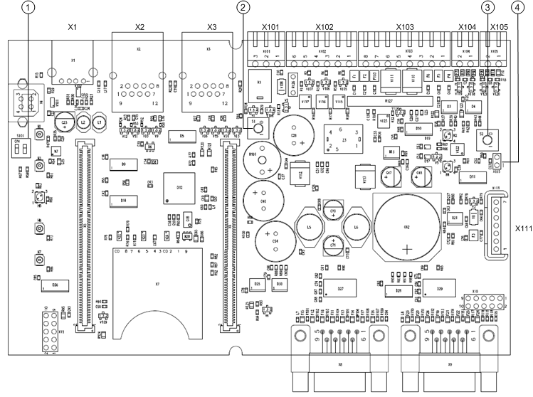
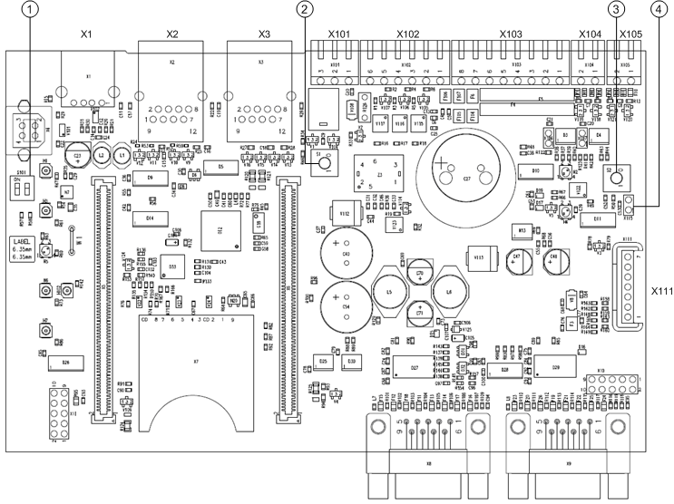

NK823x Internal Jumpers and DIP Switches
The NK823x Ethernet Port is equipped with two different types of mainboard, according to the build state:
- NKM8001-A1 mainboard (build state up to 04)
- NKM8001-A2 mainboard (build state 10 or higher)

NOTE:
The NKM8001-A2 mainboard supports locally connected DF8000 I/O modules.

| Name | Description |
1 | S101 | DIP switches: - DIP switch 1: if ON, it enables an encrypted connection on the Ethernet port 1 at the default IP address 192.168.9.41. - DIP switch 2: if ON, it enables an encrypted connection on the Ethernet port 2 at the default IP address 192.168.10.41. |
2 | S1 | Reset button |
3 | S2 | Tamper switch |
4 | X115 | When closed, it disables the box tamper alarm. |

| Name | Description |
1 | S101 | DIP switches |
2 | S1 | Reset button |
3 | S2 | Tamper switch |
4 | X115 | When closed, it disables the box tamper alarm. |